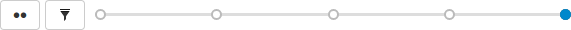

or failure is indicated in the review's heading. If your deployment program can provide a URL that provides details of the deployment, the indicator becomes linked; click the indicator to see the deployment results.
or failure is indicated in the review's heading. If your deployment program can provide a URL that provides details of the deployment, the indicator becomes linked; click the indicator to see the deployment results. During a code review, reviewers spend most of their time using the review interface:
The review interface is very similar to the changelist interface; and provides largely the same functionality, but has several notable differences that are described in the following sections.
When continuous integration has been configured for a project, test success or failure is indicated in the review's heading. If your continuous integration tests can provide a URL that provides details of a test run, the indicator becomes linked; click the indicator to see the test details.
When you hover your mouse over the test status indicator, Swarm indicates the test status and how long ago that status was achieved.
When automated deployment has been configured for a project, the deployment success or failure is indicated in the review's heading. If your deployment program can provide a URL that provides details of the deployment, the indicator becomes linked; click the indicator to see the deployment results.
The Request Review button is replaced with the review state drop-down button that indicates the review's current disposition. See States for more information.
An Edit Description icon  appears in the review's description, which allows you to update the description to reflect any updates have been made during the review.
appears in the review's description, which allows you to update the description to reflect any updates have been made during the review.
A Tasks area appears below the review's description. This area summarizes the number of comments that have been flagged as tasks, with separate counts for open, addressed, and verified tasks. See Tasks for more details.
Click the Task list button to display a dialog listing all tasks associated with the review:
Within the Tasks dialog, you can filter the tasks by the reporter (the userid of the user who created the task), and/or by task state; click:
Archived tasks do not appear in the Tasks dialog.
To view a particular task, click once on a task within the Tasks dialog to select it, and then click the View button. Or, double-click on a task. Either way, the Tasks dialog closes and Swarm adjusts the review display so that the chosen task is in view.
A Reviewers area appears below the review's description whenever a review has one or more reviewers, or you are logged in.
This area includes, from left to right, the edit reviewers button  , the current up and down vote counts, the avatars of current reviewer groups, and the avatars of the current reviewers.
, the current up and down vote counts, the avatars of current reviewer groups, and the avatars of the current reviewers.
By default, reviewer group members are not displayed in the Individuals area of the reviews page when they interact with a review (vote, comment, update, commit, archive, etc.). This avoids overloading the Individuals area with individual avatars if you have large reviewer groups.
An exception to this behavior is when a member of a reviewer group is also an individual required reviewer, in this case their avatar will be displayed in the Individuals area.
See Expand group reviewers for details on displaying reviewer group members when they interact with a review.
If you are a member of a group that is a reviewer on the review, click your individual avatar to vote on the review. See the Individual reviewer table for details. Your vote is registered for the group, and is also displayed on your individual avatar. Click on the group avatar to see how individual members have voted on the review:
You must be the review author, a project member, a project moderator, or a user with super privileges to change the group settings:
When an individual reviewer has voted on a review, their avatar displays a badge indicating whether they voted up or down. Required reviewers have a star badge over their avatar.
If you are logged in and viewing a review you did not author, your avatar appears to the right of any other reviewers and its appearance varies according to the following conditions:
|
When you are not yet a reviewer, or you are a member of a reviewer group who has not yet voted: Clicking your avatar presents a menu allowing you to vote up or down and thereby become an individual reviewer, or simply join the review as an individual reviewer without voting. When a member of a reviewer group votes they automatically become an individual reviewer as well.
|
When you are an individual reviewer who has not yet voted: No badge appears on your avatar and clicking your avatar presents a menu allowing you to vote up or down, change whether your individual vote is required or not, or leave the review. If you are also a member of a reviewer group and you click Leave Review, you will remain a member of the reviewer group.
|
|
When you are an individual reviewer who has voted, or a member of a reviewer group who has voted: Your avatar displays a badge indicating your vote. Clicking your avatar presents a menu allowing you to clear or change your vote, change whether your individual vote is required or not, or leave the review. If you are also a member of a reviewer group and you click Leave Review, your vote is cleared but you will remain a member of the reviewer group.
|
When you are a required reviewer, or a member of reviewer group that requires all votes: Your avatar displays a star badge indicating that the review cannot be approved until you vote up. Clicking your avatar presents a menu allowing you to change your vote, make your vote optional, or leave the review. If you are also a member of a reviewer group and you click Leave Review, you will remain a member of the reviewer group. Make my Vote Optional is not available for members of "all votes required" reviewer groups.
|
When a review is updated, if the review's list of files, file content, or file-types changes, any votes cast on the review become stale. The vote counts are reset, and the vote indicators become muted.
If you hover your mouse over a reviewer with a stale vote, a tooltip appears displaying the userid, how they voted, and on which version of the review; each version is represented as a point on the Review timeline.
Stale vote handling is not supported for Git-created reviews.
When you become a review participant, by joining the review or being @mentioned in a comment or in the review's description, you receive notifications for any events associated with the review. If you find that the notifications become more of a burden than benefit and you wish to continue being a review participant, you can disable notifications:
Once notifications are disabled, you no longer receive notifications. However, if you are @mentioned in a subsequent review comment, you do receive a notification for that comment; regular notifications remain disabled. This approach ensures that you don't miss anything that other reviewers or the review author deems important.
If the configuration option to allow users to change the author of a review is enabled, then an extra icon is displayed to the left of the Tasks and Reviewers icons. By default this option is disabled, so talk to your Swarm Administrator if you require this feature.
If the author icon is displayed, then clicking the edit icon will open a dialog that allows the author of this review to be changed. This is useful if the original author is no longer available, or ownership has passed to a different developer.
A slider control, called the Review Timeline, appears just above the list of files. If the review's files have been updated at least once, this slider allows you to browse and compare arbitrary versions of the review's files by dragging the version point(s) on the slider.

A Review Timeline tooltip Each point on the slider represents a version of the review's files, with the oldest version on the left and newer versions on the right. Hover your mouse over each point to see a tooltip displaying the version number, who created it and when, plus the changelist containing a copy of that version's files.
If you adjust the slider while files within the review are expanded, Swarm keeps those same files expanded whenever new versions need to be displayed.
The button to the left of the slider with two dots toggles diff mode for arbitrary versions of the review's files. In diff mode, the slider shows a bar indicating which two versions are being compared, and the endpoints of the slider can be dragged to any of the available points to compare any earlier version of the review with any later version.
Hovering your mouse over the bar shows a tooltip displaying the versions being compared, and the changelists that contain the files. When a review has many, many versions, Swarm maintains a minimum distance between version dots, which then requires horizontal scrolling.
Dragging one of the version points to the edge of the timeline display area causes the timeline to scroll in the direction of the drag motion, until the end of the timeline is reached. Alternately, click either the button or buttons, or drag the scrollbar itself, to adjust the scroll position.
When you release the version point, Swarm adjusts the scroll amount to place the version dots within view, when possible.
It is good to remember that a review consists of one or more Swarm-managed changelists. When comparing versions of a review, Swarm is showing any differences between the selected versions, not the review author's personal changelist. See Internal representation for details.
For involved reviews that have many revisions and many comments, it can sometimes be difficult to determine whether the points expressed in comments have been addressed. To help with such situations, click the Filter comments icon to limit the displayed comments to the current review version.
The file listing header displays:
In diff mode, the file listing header displays:
The History tab presents a list of the events that affect this review, including:
Beside each file in a review is a Mark as Read button  , which help you keep track of which files you have reviewed. The read flag is remembered independently for each user. If the content of a file is changed in an update to the review, the read flag automatically clears. This is particularly useful when a code review consists of many files.
, which help you keep track of which files you have reviewed. The read flag is remembered independently for each user. If the content of a file is changed in an update to the review, the read flag automatically clears. This is particularly useful when a code review consists of many files.
When clicked, the button's colors invert and the associated file is visually muted, to make it easy to distinguish read files from unread files:
If a file has been marked as read, click the button a second time to reset the status to unread.
Git Fusion-initiated reviews include the Git logo beside the main review identifier. This indicator is important because Helix Core users cannot update Git Fusion-initiated reviews.